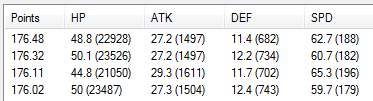
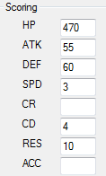

Test Generation
This is where we can preview some of the loadouts that conform to the builds specifications.
May take time to load, change it up in options.
Rune Manager
Build Creating
Options
Test Points
Once you've got some numbers in, it'll look like this.

The real fun is over on the right, where you mess up the numbers.

Putting the two together, with HP having a 'score' of 470, you can see that 22928 / 470 is 48.8
But what does that mean? How does that do anything?
Notice SPD is 3.
This literally means that I'd trade 470 HP for 3 SPD (and visa versa).
As you type in numbers (even decimals), you'll see the builds jump up and down, sorting live!
You can then see what kind of builds are possible, then how to chose the best.
The point being, is that if you are defining your 5th or 20th build, the creamiest runes are long gone.
You saw some sweet builds, but the runes they used have been given to the monsters further up the list.
This scoring is how to chose second/third/nth best without asking you every time.
The upside is that aside minor tweaking, you can keep your build files FRR to FRR.
Once you've done the initial task of deciding what you value for your monster, just runing the tool will tell you the runes you want.